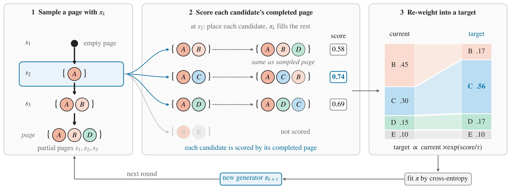
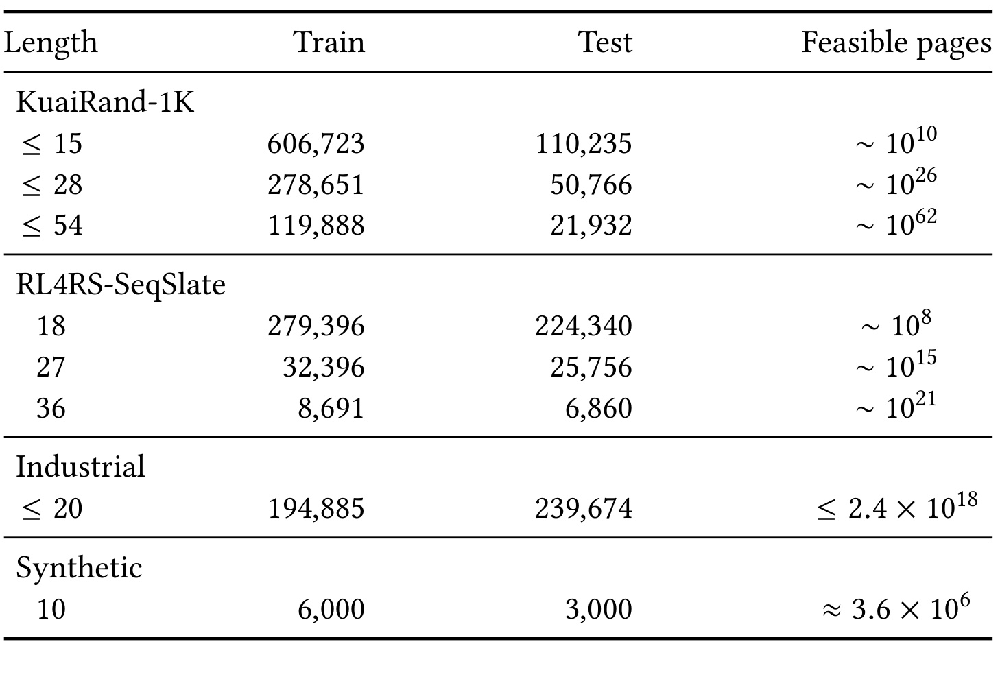
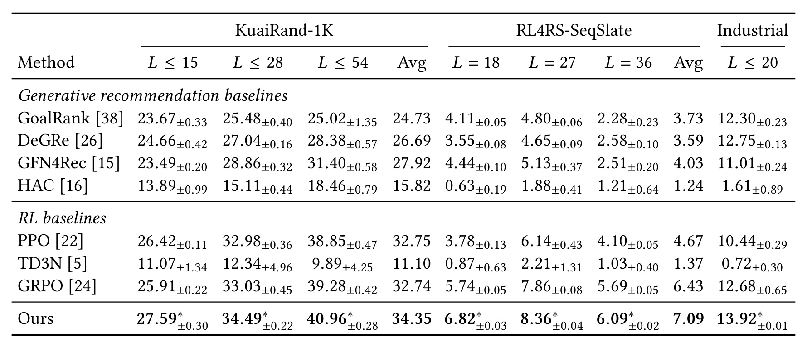
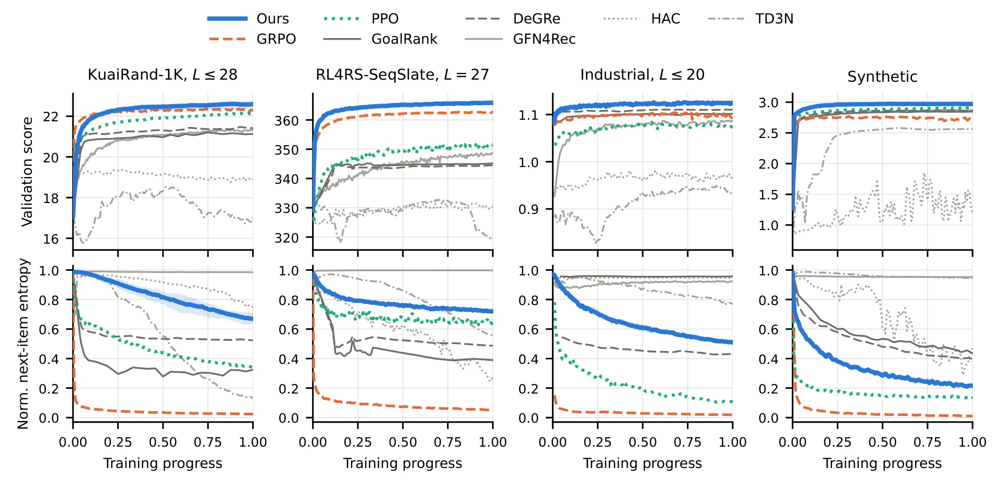
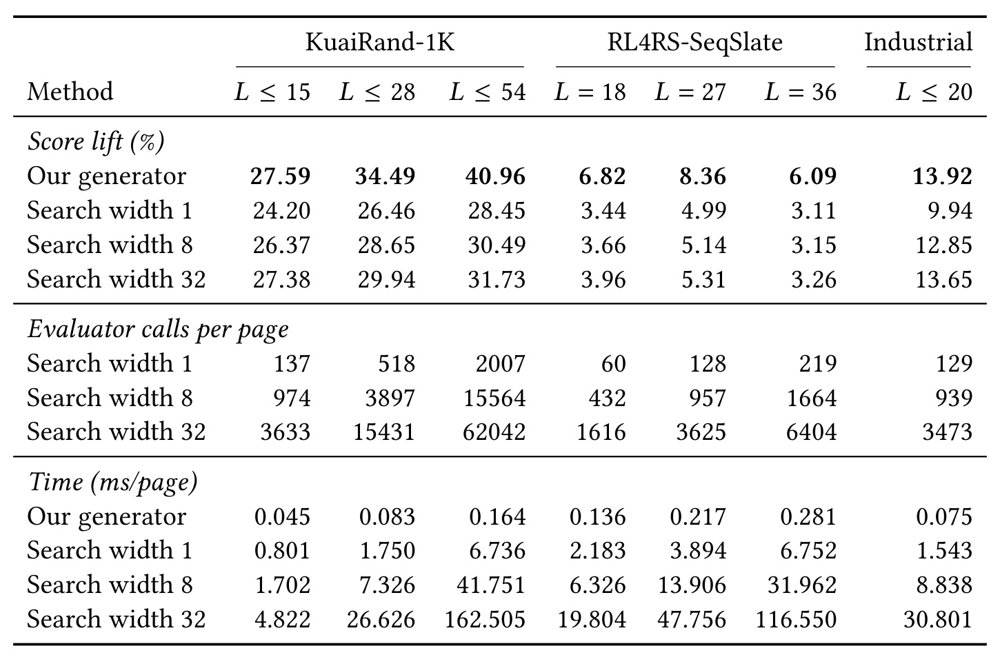
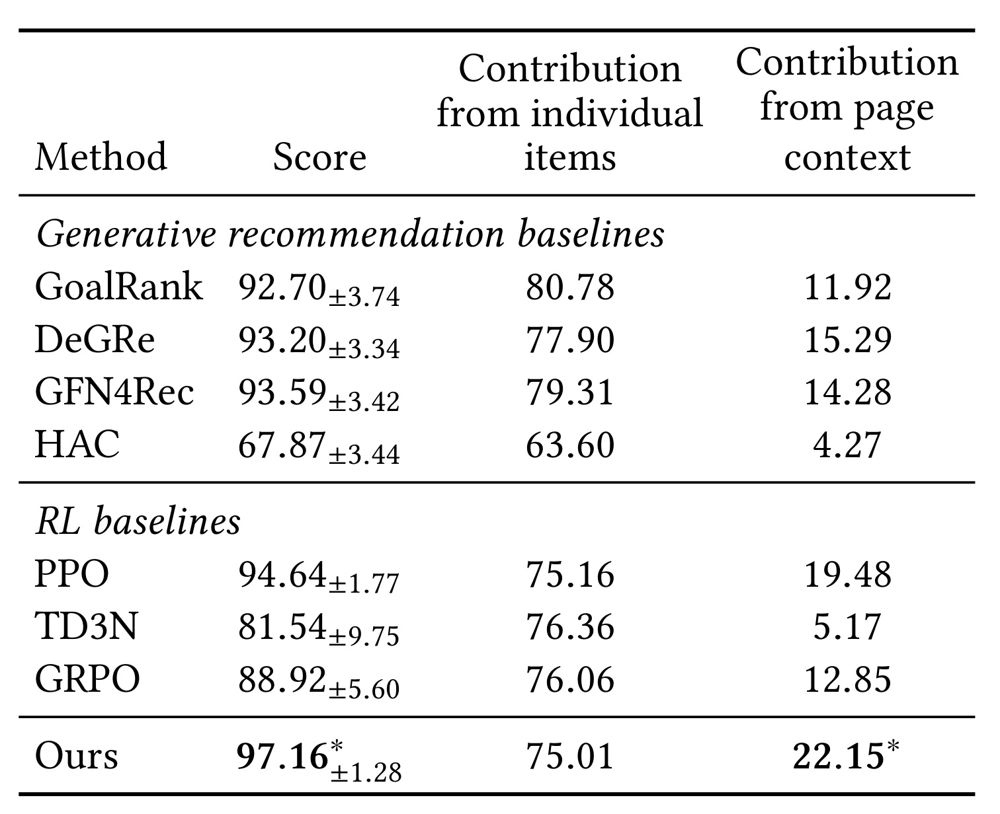
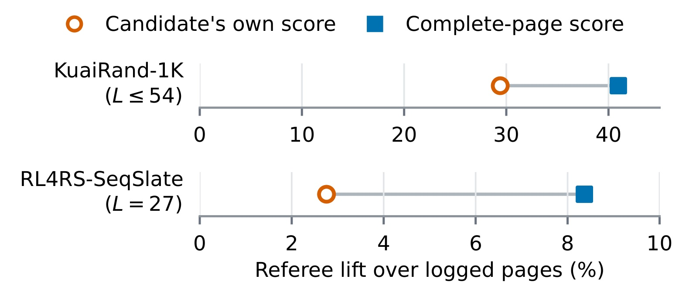
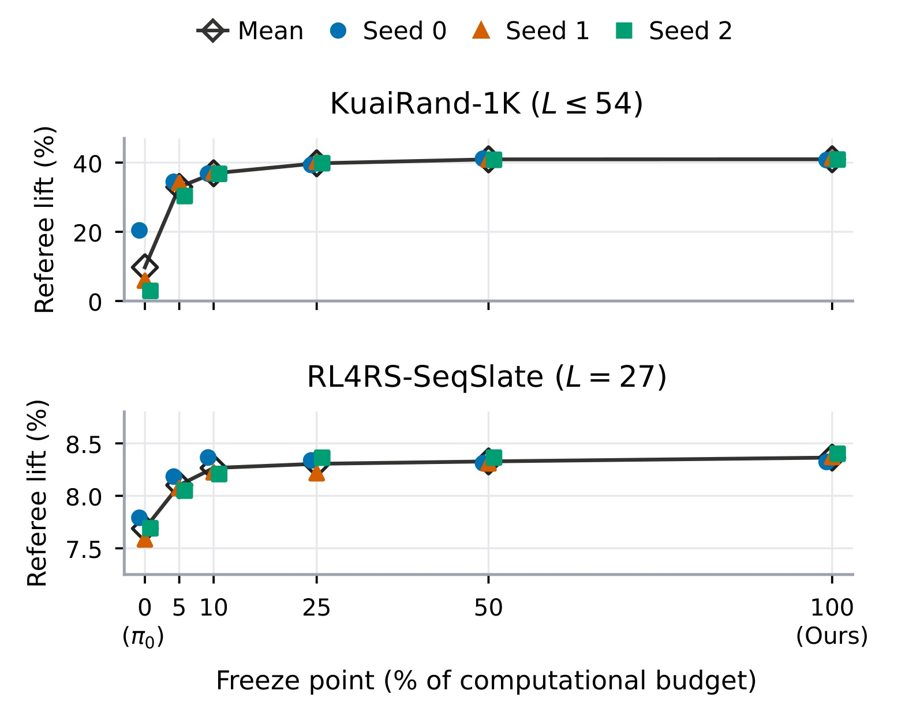
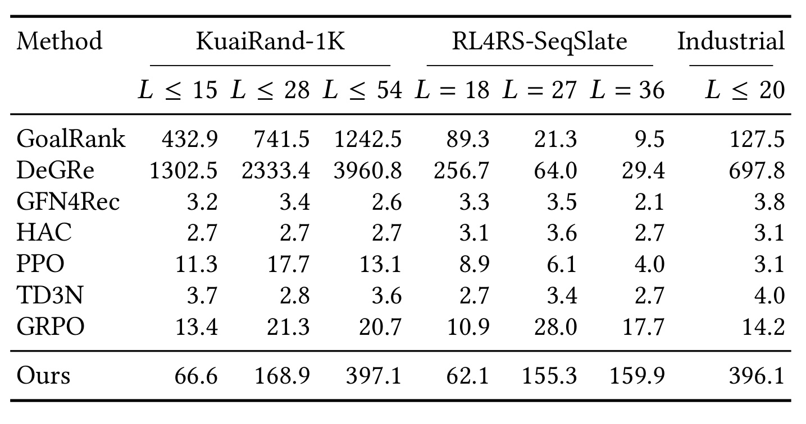

整页策略改进：用完整续页给生成式重排的每一位分配信用
Chen Qiu、Zhigang Hua、Qi Xu、Jizhe Zhang、Sha Hua、Ren Mao、Luke Simon 来自 Meta。论文于北京时间 2026 年 11 月 19 日提交首版，进入 arXiv 11 月 20 日列表。公开入口为预印本，论文专属实现本轮未独立核验。 论文入口
推荐页面整体被消费，条目会争夺注意力，也可能互相补充。整页选择和排序形成组合空间。已有生成式重排要么把同一个页面级训练信号赋给采样页里的每次选择，要么拟合在训练开始前生成、随模型进步基本保持固定的目标页。
1. 背景和问题
1.1 在同一页面里选择和排序
内容流和商品列表上的交互会受到前序条目影响。同主题条目连续出现时，前一条可能已满足信息需求，后一条对同一用户的增量价值下降。反过来，一件配件放在主商品后面时，用户可能更容易看懂用途，购买意愿变强。还有依赖整页结构的业务约束，例如广告需要在一定数量的自然内容之后出现。一个候选在当前位置符合间隔规则，还需要保证剩余条目能填满后续位置，否则当前一手就会使整页任务无解。逐条预估仍可作为选择输入，但局部排序指标无法表达后续补位、余下可行排列和用户是否还会浏览。
把这类需求写成整页优化，要先明确请求级候选池、要放的实际位置数、可行性和评分函数。本文有三种基于日志的任务。KuaiRand-1K 从扩展池选出与日志页相同数量的条目，同时调整顺序。RL4RS-SeqSlate 重排给定池全部条目，原行类型和每一分组的约束都要保留。私有内容流只重排该请求已经展示的自然内容和广告，并限制广告间隔。它们共享“在合法池中逐位选、完成后按页打分”的抽象，候选来源和动作自由度不同。把第一种任务的提升套到第三种任务时，不能假定线上也允许扩召回，更不能把第三种的私有日志成绩解释为扩大候选池之后仍能得到同样的结果。
即使全页 evaluator 已经存在，对一个请求逐页枚举也很难，选出几十项还要排序，组合量随候选池和页长共同增长。按位置构造页面能始终处理有限合法动作，但有两个分开的问题。其一是如何让打分器传递给每一位可信的偏好。其二是在线是否还要用 evaluator 搜索数以千计的前缀。原文用一个小型自回归指针模型学习策略，离线准备监督后上线只保留逐步打分和掩码。生成空间取自输入请求的池，没让模型产生候选池之外的商品或生成语义标识。这一点对应的工程实际是同一个召回请求下的整页策略重排。
1.2 已完成页面里的局部选择如何比较
一条采样页面得到高分，可以来自靠前位置适合，也可以来自多个位置彼此配合。整页用同一个回报在序列层做优化，梯度能利用页级反馈，却没有直接告诉某个固定前缀下哪一个候选是更好的替代项。例子中，已摆入条目 A，当前策略倾向把 B 放第二位。摆入另一个候选 C 以后，第三位的最合适选项可能立刻发生变化。只看 C 在第二位的点击，或只把 B 替换成 C 同时锁死第三位，都可能漏掉收益形成的路径。论文比较的是同一 A 前缀下分别放 B、C 之后，由同一参考策略续写至完整的页。这个问题和给两个不同用户的页面做偏好对齐不同，固定共同前缀约束了反事实比较的状态。
固定目标页可以预先用搜索构造，为生成器提供较稳定的监督，其代价是搜索时的候选选择规则和评分上下文成为整个训练阶段的上限。生成器发生变化后，局部动作让它进入的新前缀也会改变，对同一动作完成的后续内容也变了。此前打分较低的候选可能在新续写下变得更好，早期固定的标签不会自动反映这种变化。反复刷新也有代价，每轮必须在当前生成器上重新采样、生成备选完整页并查询 evaluator。本文对“是否要一直刷”专门做了等预算的冻结实验，观察到早期刷新对大空间任务尤其重要，后段保留刷新带来的幅度较小。这个现象提供了估算计算预算的依据，但可行时机取决于候选池、评价器和策略实际的收敛速度。
原文把自身工作放到生成推荐与策略优化的交叉位置。Seq2Slate 一类方法已经用已选前缀约束对下一物品的预测。OneRec、HiGR 一类工作在列表层做偏好对齐。DeGRe 依靠离线 beam 得到固定监督，GoalRank 采用整列表组训练。NLGR 评价一项局部改变时固定其余内容，本研究对改变位置后余下的页重新采样。由整页评分形成位置级训练分布本身沿用带 KL 正则的改进步骤，与 MPO 的指数重加权有关。贡献落在如何定义候选的完整后续、如何把价值变成位置标签、如何在不穷举条件下反复训练可在线解码的策略。
1.3 训练目标与验证口径
要判断最终方法学到了什么，需要区分训练评价器、测试裁判和真实用户反馈。日志只包含当时策略实际上展示过的组合，拿新策略重排出来的页去重放时，部分位置与浏览路径已经改变，直接把老点击贴到新位置会给出错误监督。论文的解法是在两个公开日志和私有日志中建立整页模型当作代理环境，训练阶段使用固定的主评价器，测试阶段由独立拟合的裁判打分。生成器选择 checkpoint 时使用的是主评价器，不查测试裁判。裁判依据包含测试期日志的观测去学习响应，因此能反映当时的行为分布，同时也把该拟合模型的偏差带到了结果中。
真实线上用户可能看到重复内容而停止浏览，也可能继续滑动、跳出、回访或改变消费习惯。只要这些变化没有被 evaluator 及目标组合表征，策略提高代理分数就不会自动提高这些指标。论文另用具备可枚举最优的合成机制处理这个问题的一部分。作者构造含主题、格式、位置、互补与饱和以及浏览停止的真值函数，训练和评测都可计算真实的合成目标。日志来源能检查方法在大空间和复杂约束下的表现，合成环境能检查目标可精确计算时是否更接近最优和收益来源。两套证据各自回答不同问题，线上因果效果仍需要上线流量与一致的候选口径验证。
2. 方法
2.1 可行前缀与自回归策略
给定请求 $c$，其中包括用户上下文及候选池，从中无放回选择出长度 $L$ 的有序页 $x$。在第 $t$ 位，可观察到的状态为 $s_t=(c,a_1,\ldots,a_{t-1})$，可行动作集合 $\mathcal A(s_t)$ 由当时未被使用且还允许合法完成页的候选组成。对于不同任务，有效长度和掩码都依请求变化，填充位不参与策略。作者用 Transformer pointer generator 在当前池上产生概率，原文的优化对象由逐位置分布与整页评分联合定义。
符号解释：$\pi(a_t\mid s_t)$ 是在第 $t$ 个前缀状态选择合法条目的条件概率，乘积是完整页在同一请求下被构造出来的概率，$r(x)$ 是评完所有位置后得到的标量，$J$ 对生成和请求都取平均。$r$ 会计入前面决定对后面条目的影响，而且在一轮与跨轮训练中保持固定。终态前没有额外环境观测，因此原文可把每个中间状态视为候选树中一个节点。离线训练希望提高随机策略的 $J$，实际推理取最高概率的合法动作，两个决策规则需要分别在验证数据上观测。
2.2 完整续页与位置级指派
在第 $k$ 轮固定参考策略 $\pi_k$，对同一前缀分别强制放入不同动作，再让 $\pi_k$ 填完余页。候选比较使用完整结果的条件期望。对有可能出现的前缀 $s$，原文定义式（1）所需的动作价值、当前价值和性能差分。
符号解释：$Q_k(s,a)$ 把“先选 $a$、之后由参考策略填完”的整页看作一个随机结果，$V_k(s)$ 是下一步也由参考策略选择时的平均分。$d_t^\pi$ 是新策略到达第 $t$ 位前缀的分布，从而会随 $\pi$ 改变。可将每一项看作一次局部动作更换产生的预计增量。沿新策略采样的整条路径，比较相邻节点的旧价值并相加，前后相邻项相消，只剩新页得分和旧策略起点期望之差。这个恒等式说明局部比较可以支撑全页目标，但若任意改变策略，就要重算进入各前缀的概率。
每轮收集的前缀由参考策略产生，作者在式（2）用其访问分布近似新策略分布，引入 $\tau>0$ 的 KL 惩罚来限制向新策略变化的强度。这样每一个前缀处的条件分布能分开求，$q_k$ 的表达式相当于对参考权重乘上整页价值的指数。
符号解释：$\mathrm{KL}_s$ 是固定状态的条件分布散度，$q_k$ 是可自由设置各状态分布时式（3）的唯一解，见式（4）。$V_k$ 对当前位置全部候选都一样，写成优势或直接写 $Q_k$ 会得到相同的概率分布。温度越低，给定的价值差会触发越大的概率比变化。相同价值的候选维持参考赔率，参考策略概率为零的动作始终得不到这一步更新的支持。该代理目标和原目标在参考策略处数值相同、梯度也一致，因为旧策略处每状态的平均优势为零。首轮后的状态访问变化仍依赖真正的生成过程，不能用这个局部一阶性质外推任意大动作。

Figure 1 先从 $\pi_k$ 抽出示例页 ABD，拿到空页、A 和 AB 三个前缀。中间只放大 A 后面这一位。把 B、C、D 分别放入第二位，参考策略给它们续写成 ABD、ACB、ADC，示例打分依次是 0.58、0.74、0.69。图中虚线环起来的条目由续写采样产生，第二位的替换动作用实线圆表示。E 留在合法池里，但没有进入当轮评分集合。右侧概率条把 B 从 0.45 训到 0.17 的目标、C 从 0.30 调到 0.56、D 从 0.15 调到 0.17，E 保持 0.10。脚下的回线表示拟合后的生成器会重采样下一轮的页面和局部比较。该图能看出质量守恒怎么限制评分覆盖不足的影响。虽然 B 第二位自身可能很合适，同一参考模型完成的 ACB 仍得到更高整页分。图示分数展示的是各一个续页，实际评分会随抽中的第三项而波动，不能把 0.74 当作 C 在任意前缀或任意后续结构下的绝对贡献。概率目标会保留 B 的剩余支持，以便局部规则或续写质量发生变化时再次比较。右侧三项合计为九成，与左侧已评分集合的质量一致，重加权没有向未评动作借用概率。
2.3 候选预算与分布拟合
逐位给所有动作续写成本很高。实际算法对每个训练请求先采一个合法页，每个位置只取参考策略的 top-$\kappa$ 和其余合法候选的一次均匀抽样 $\kappa_r$。候选数不超过两者之和时给所有候选计分。对已选动作只采一次完成页，得到 $\widehat Q(s,a)=r(x')$。固定动作的单次采样是其真实条件期望的无偏估计，指数变换与分母中同时出现的随机值会改变目标的统计性质，故一次 rollout 置信度有限。实际配置在两个公开数据集取 6+2 个待评分动作，私有页取 16+2。页面后部若接近可行终止，评分数自然缩小。
符号解释：式（5）的 $S(s)$ 是本轮有续页分数的候选集合，$m(s)$ 是该集合原来占据的总概率。若 $m(s)=0$，目标直接使用 $\pi_k$。实际构造旧模型完整动作分布后，仅在已评动作之间移动这部分质量，对没评分项逐项保留参考概率。这让训练既能在高概率动作附近比较，也对较小概率的合法动作留出探索空间。两个公开任务用 $\tau=1$，私有任务将页分数除以日志均值后用 0.01，合成任务用 $10^{-4}$。温度数值必须连同分数刻度阅读，不能据此断言哪个任务使用了更激进的策略改动。
式（6）把每轮计算出的静态分布作为软标签，用参考模型参数初始化并拟合少量步。理论代理最小化 $\mathrm{KL}_s(\pi\Vert q_k)$，实际交叉熵对应 $\mathrm{KL}_s(\widehat q_k\Vert\pi_\theta)$。自由分布加精确标签时，两者极值都与同一目标重合。共享参数网络只能把很多序列状态的目标映射到一个模型，个别状态仍可出现偏差，两个方向对误差的代价也不同。两个公开数据集每轮取六千请求，私有数据每轮三万，拟合两轮样本遍历。合成任务每个目标批只做两步 Adam。推理端接收请求池和掩码，逐位置贪心选择合法动作，不调用整页评价器或为每个动作重新完成多页。训练随机续页与线上逐位贪心在实现上应拥有一致的候选身份和合法性定义。
2.4 精确改进与支持内收敛
在已知真实 $Q_k$、每个前缀能准确设为目标的条件下，原文式（7）指出改进量等于新策略访问状态上的对称 KL 乘以温度。一个状态的 $Q_k$ 不全相等且目标真的改动时，就会给这项差分提供正贡献。对于部分评分，若已知被评分动作的精确 $Q_k$，保持其总质量且让集合内的期望不下降，同样能推到整页期望报告的式（8）。因而部分打分的方向本身有理论依据，也需要逐状态真实价值和精确更新。
符号解释：$q_k^S$ 用精确 $Q_k$ 替换实际标签里的单样本估计，再用真实未评分概率补齐整页策略。若有限候选页、固定正温度和得分有界，还可以证明每轮精确全量更新在初始策略支持内收敛到最高期望页分。附录式（11）把单请求上某个可达页 $x^\ast$ 的差值上界写为：
这里 $K$ 是完整精确更新的轮数，$R$ 是该请求的值域，初始页概率越小，上界就越松。原文 Softmax 在合法动作上给出正概率，使最优合法页处于可达支持。若上游候选截断或硬掩码永久去掉动作，理论最优只在新定义的支持内成立。实践用有限前缀、单样本续写、部分打分和有限交叉熵拟合，不具备精确更新假设。训练裁判上的每轮实测单调、贪心解码最优以及真实用户收益都需要各自的验证。 这个界的意义主要是明确何种局部信息足以支撑方向，再让对照实验判断资源受限后的近似还能保留多少优势。
3. 实验结果
3.1 候选池、页长和评价环境

Table 1 说明了为什么不同实验的“页长”应按任务读。KuaiRand-1K 把同一会话内连续二、四、八个请求拼为一个页，15、28、54 是位置上限，实际平均约九、十八、三十六项，扩展后池平均约十七、三十五、七十项。额外候选取自用户未来二十四小时的曝光，同一请求的池对各方法和种子固定。在最大上限下，合法 ID 序列的中位规模约为 $10^{62}$，测试约 21,932 页。RL4RS 的 18、27、36 来自二到四个九项子页，必须按候选所属行重新排；同一九项子页不允许 ID 重复，特殊条目最多一项。在长度二十七的组，测试 25,756 页，中位可行数约 $10^{15}$。私有内容流有 194,885 条训练页和 239,674 条测试页，候选就是此前已展示的混合内容，最多二十位。合成任务每页十项排列，共 $10!$ 种，训练六千、测试三千。各组空间、候选和约束不同，因此跨组平均值只在同数据集的分组内部描述，不应把工业和公开组的相对提升直接叠加。日志候选池共享也只能控制已给定池中的排序比较，未来曝光取候选会改变现实可获得的候选集合。
公开实验的主 evaluator 和独立裁判都采用 Transformer。KuaiRand 模型用历史编码并按因果位置顺序预测点击、长看、点赞，页面目标以 1、1、10 加权。RL4RS 跨子页保持因果，在同一子页中允许双向信息，预测购买概率后乘以物品权重。两组留出会话的主模型与裁判 AUC 分别为 0.777 对 0.778 和 0.912 对 0.919。AUC 描述观测到的标签排序区分度，无法判断新组合分数是否正确校准。私有任务主模型据训练日拟合，裁判按三个测试日各自拟合。各算法共享指针生成器架构和每个随机种子的初始权重、候选及掩码。其规模约二十五万参数，隐藏宽度六十四，每组四头，两层编码器加两层解码器，没有预训练。作者适配了公开基线，所以结果也与适配方式和 evaluator 口径相关。
3.2 独立裁判下的主结果

Table 2 的数值是对同一批请求，分别计算生成页和日志页在裁判下的平均分，再计算前者相对后者的百分比变化。公开集每个长度组的三种子均值对照里，本文在 KuaiRand-1K 三档为 27.59%、34.49%、40.96%，不加权均值 34.35%；最佳基线均值 PPO 为 32.75%，差 1.60 个百分点。RL4RS 三档为 6.82%、8.36%、6.09%，均值 7.09%；最强基线 GRPO 均值 6.43%，差 0.66 个百分点。RL4RS 最长页上的所有方法提升都比中档小，说明空间扩大和任务约束变紧可以同时发生，无法保证长页面让同一种算法获得更大的相对收益。私有结果为 13.92% 对 DeGRe 的 12.75%，差 1.17 个百分点；三个测试日的分项依次为 14.03%、14.82%、12.91%，DeGRe 则为 12.69%、13.55%、12.02%。星号表示本文在对应列每个种子都高于所比较基线，分栏标准差是跨训练种子，无法代替跨天方差或用户级置信区间。私有任务没有披露裁判绝对分，这些数字是冻结候选下的代理值，三个日切片均领先也只表明代理复核的方向一致。公开集各档的日志基准分不同，跨档的平均百分比属于等权汇总，并未按用户量或总分加权。
在最大的 KuaiRand 组，本文的 40.96% 对 GRPO 39.28% 和 PPO 38.85%，固定目标的 DeGRe 为 28.38%。在最小组，本文 27.59%，PPO 26.42%，DeGRe 24.66%，这里固定目标落后的幅度小于最大组。两种情形和 Figure 4 上最大组冻结早期表现较弱相符，但不同长度组的日志页和候选统计同时变化，不能将跨长度分数差全部视为页面规模的因果作用。读实验时应比较同列相同候选条件下的相对位置。
3.3 训练轨迹与动作熵

Figure 2 上排给出验证页得分，下排给出沿贪心验证路径观测到的下一物品分布熵，并除以合法集合大小的对数。位置计数随候选被使用而收缩，做这一步归一化便于比较不同位置的相对多样性。KuaiRand 和 RL4RS 展示中档页面，私有组用日志均值归一化，合成组使用自身真值尺度。横轴是每一运行的当前训练步除以末步，不是相同 GPU 时间，也不代表消耗相同 evaluator 次数。蓝线在四组上都出现较好的验证分数，并且公开两组末段仍有约 0.67、0.72 的归一熵，私有约 0.51。GRPO 虽给了系数 0.01 的熵奖励，观测组末段仍只有 0.06 或更低。这个现象与逐轮重加权保留旧分布支持一致，较高的替代动作概率也给下一轮前缀采样留下空间。HAC、TD3N 的熵由动作得分定义，不能直接视为已执行动作的熵。图中的熵属于训练机制诊断，没有从线上贪心输出用户侧多样性指标，这里多选项有支持仅描述生成分布，部署固定输入仍可选同一个最高概率候选。
3.4 贪心解码与前缀束搜索的代价

Table 3 将训练后的生成器在同一批请求、池和约束下与束宽 1、8、32 的搜索比较。搜索每步对留存前缀的全部合法扩展使用主 evaluator 评价已放内容，空位做掩码，没有给剩余页估未来得分，最终由独立裁判评价。工业组中，直接生成得 13.92%，束宽 32 为 13.65%，差 0.27 个百分点。束宽从 8 增至 32 时该组裁判值由 12.85% 增至 13.65%，每页调用量由 939 升至 3,473。本文推理发生零次页评分查询，仍要完成候选及特征准备和指针网络逐位推理。工业组批摊时间是 0.075 毫秒每页对 30.801 毫秒每页。最大 KuaiRand 组是 0.164 对 162.505 毫秒，束宽三十二每页查询约 62,042 次。这里测到的是单张 A100 80GB 上批处理并同步后的平均每页生成时间，包含候选生成与特征构造但排除读数据和模型加载。数值可以在本表相同数据集内说明评分查询代价，不能当作单请求 P99、任意模型规模的加速倍数或者实际机器容量。工业组的宽束调用代价需连同同组较小的代理分差一起读，不能套用公开长页的调用数。
宽束搜索仍面临当前前缀值和完整页值的差异。当候选为后面的互补条目让出位置时，前缀本身可能更弱，束的目标可能提前滤掉它。对于公开推荐数据，宽度三十二确实比贪心搜索更好，但搜索对前缀的排序准则始终相同。RL4RS 还有至多 0.63% 搜索结果不可行后回换为日志页，这一处理计入搜索端成绩。该对照展示了对所测前缀搜索的优势。加入能预估续页得分的搜索启发式或不同大束宽时，结果尚无本文实证。训练生成器求平均跨三种子，搜索每个束宽只跑一次确定性结果，也不宜用两栏的数值直接推断不同运行习惯下的置信度。
3.5 精确最优与页面价值分解

Table 4 每行基于同一页在两种打分模式下的总价值计算。完整模式保留格式与位置匹配、主题冗余和互补、连续同格式疲劳，以及到达不同位置的浏览概率。分离模式固定到达概率为日志页按位置平均值，保留基础用户候选相关性、候选效用和固定位置权重，去除页面关联项。分离模式分数与完整得分之差是剩余页面上下文贡献。两项都除以相同请求在完整模拟器中穷举出的最优页分，不是分别除以各自的最优。本文整页总分为精确最优的 97.16%，PPO 为 94.64%。本文单条项目贡献 75.01%，略低于 PPO 的 75.16%，但页面项 22.15% 高于 19.48%，总比分差约 2.52 个百分点主要来自后者。把分离模式最大化的排列送回完整模拟器，作者报告它只得到完整最优的 75.9%。这个数字描述生成的 5,000 物品与模拟用户世界所设定的配置，真实业务如果没有这么强的上下文效应，分解大小不应照搬。三个种子还对应三个随机世界，表中的标准差覆盖了这种构造变化。
模拟器给到达第 $t$ 位时的点击率 $t^{-1/2}\sigma(z_t)$，点击后贡献取物品的效用。页值计算会乘到达位置的概率，浏览有满足点击后的离开以及三位内无点击的屏幕放弃规则。因此高效用物品即使排得靠后，也会受到到达率折扣和上下文点击率影响，分数机制具备与整页学习目标对应的相互作用。作者明确计算了最优顺序作为评价分母，训练策略仍用抽样而非穷举。两者的差距也没有将该合成模拟器当作真实用户，只是在可检查的世界中测算法能否获取超出逐条强度的收益。
3.6 候选自身得分与刷新时间的消融

Figure 3 比较同一前缀下两种评分范围。实心方块使用整页续写后的分数，空心圆只用候选在当前槽位的预测分，RL4RS 变体用填充尾部读该位，因此候选对未来位置的互补、排挤和约束影响不会通过后续生成体现。图里的 KuaiRand 最大组，局部打分约在 29% 附近，整页为 40.96%。RL4RS 的二十七位组，局部分数约 3%，整页为 8.36%。空心圆值由图上读取，适合描述数量级，不能写成表中未列出的精确数值。两臂使用同样的种子、请求时间表、评分候选规则和拟合机制，变化包括移除续页计算，以及分数从完整列表变成所在位置的贡献。因而该对照说明这种局部评分替代在两个测试组都表现较弱，不能拆出每一种上下文交互对差距贡献多少，也未证明其他形式的前缀价值预测会有同样的缺口。对实现来说，完整续页的必要性应在相同候选池与同一个 scorer 上检查，若直接对换另一评分模型，两个变化无法归因。

Figure 4 沿着训练预算从起点冻结、百分之五、十、二十五、五十直到百分之百安排对照。这里冻结的是生成训练数据的策略，它仍继续对新一批请求采页面、定待评分项、采后续内容，并提供温度重加权前的概率先验。被训练的生成器不冻结，继续拟合新生成的目标直到匹配的训练轮数、请求集和优化步预算结束。KuaiRand 最大组从零点冻结明显偏低且三个种子有分歧，推迟冻结起点后分数逐渐接近右端。RL4RS 二十七位组在零点冻结时约 7.7%，继续刷新到末尾约 8.36%，中段冻结的均值已经接近完整配置。两组说明早期参考分布和数据更新更重要，不能把该横轴理解为训练过程中移除数据或重置生成器。作者沿参考轨迹的 checkpoint 续作，在 RL4RS 上 evaluator 次数匹配差异小于 0.2%，该结论属于有限预算、两种设置，而不是全部任务的最优冻结时点。后续若减少刷新，可同时记录旧与新策略的合法前缀覆盖差，以及最终页分和建标签成本。
3.7 评价器成本从线上移到哪里

Table 7 的单位是百万次训练评分调用，一次调用评价整页或局部页。GoalRank 与 DeGRe 各自的离线目标构造也计入。私有环境下，本文达到 396.1 百万次，DeGRe 为 697.8 百万次，PPO 为 3.1 百万次，GRPO 为 14.2 百万次。KuaiRand 最大组本文是 397.1 百万次，DeGRe 3,960.8 百万次，PPO 13.1 百万次。对同一个 scorer，该计数能表达离线消耗落在哪些方法上。比如私有组本文约为 PPO 的 128 倍查询量，代价并没有被推理阶段的零次页评分抵消。另一方面，训练后可重复使用策略，PPO 和 DeGRe 在线也训练出生成模型，零页评分查询是对服务期前缀搜索的优势，并没有给所有训练型基线带来相同的服务差。每张页的长度、可缓存部分、何时批量打分以及特征准备也会影响单次查询实际耗时。部署决策需要同时测离线训练频率、构造标签资源和线上相同覆盖的服务开销，不能把几列调用次数或平均毫秒直接转换成 GPU 数量节约。若评价器推理已可在训练机上并行批处理，还需实测其峰值吞吐以及对更新周期的影响。
作者的主评测保证了每种训练方法共享主评价器和同型策略，但没有统一限制 Table 7 中的评价器调用数。对于预算更紧的系统，可以将前缀数量、每个前缀的候选打分数和续写次数设计为独立变量，确认相同离线成本下的最优配置。Figure 4 的冻结消融给出了构造模型刷新方面的切入点，它并没有减少等预算对照中的 evaluator 计费。用共享缓存减少计算、减少训练后段刷新和降低评价器次数也需要分别实测。比较时把公共 evaluator 的训练成本、生成器的训练成本与产出覆用周期分别列出，会比只使用 Table 3 的在线侧单项数据更接近真实预算。
4. 总结
4.1 可以确认什么
本文给整页风险和收益找到了可以训练的局部比较单位。同一请求同一前缀下，把候选 $a$ 放进当前位，交给冻结的当前生成器完成余下页面，再按相同 evaluator 对完整结果求值。对这些动作得到的位置概率有一个与旧分布保持近邻关系的闭式目标。每轮拟合后重新生成数据，推理阶段交付的仍是轻量指针生成器和合法性约束。公开候选池、私有日志和合成最优的结果分别覆盖真实记录尺度、受约束排序与机制可验三侧。证据最贴近方法贡献的是同前缀全页对局部打分的消融，以及模拟器中增加的页面上下文分数。读这些数字时应保留裁判模型、候选来源与算力测量条件。
4.2 局限
- 公开与私有结果依赖响应裁判外推到此前没展示的组合。裁判接触测试期日志是为了拟合该期用户行为，生成器选择不使用它。评分提升可以与真实线上反馈不一致，特别是当新页超出裁判训练分布、长期回访场景或广告竞价机制发生改变。
- KuaiRand 扩展候选来自未来二十四小时曝光，实验池在各方法间公平共享，但不能直接还原现实召回时刻的候选。私有数据固定为已显示候选，无法测试跟改召回或增减自然内容比例的联合收益。
- 论文证明依赖精确 Q、自由逐状态概率和正温度，伪标签来自一次续写，训练共享网络，线上还采用确定性贪心。期望保证与条件范围明确，现实收敛速度、噪声导致的高分误排以及分数波动仍需记录。
- 束搜索只用前缀已有内容打分，宽度最高三十二，无法代表完整页 lookahead 的理论最好结果。端侧只报告单机批摊延迟，缺少请求批大小分布、并发与尾延迟实验。私有数据的裁判绝对值和源日志不可用，无法独立复核。
- 训练相对多种 RL 基线需要数量级更多评分调用，架构的共享参数规模很小，评分模型之间的复杂度也不同。现有表不能外推大模型重排训练中的内存、副本负载、训练周期和线上机器预算。三种子结果适于检查一致方向，支持更细的人群或可靠性结论仍需要原始请求级分布。
4.3 复核方向
- 在生产截面还原同一请求截止时的候选池与约束，用固定分母观察代理分、有效候选率、规则通过率和位置分层反馈。任何实际流量验证都需要保留与现有页策略相同的召回上游和打分预算。
- 抽样记录固定前缀下同一动作多次续页的分数方差，检查不同温度及 top 加随机候选的概率集中度，同时量化有无多次 rollout 的真实开销和收益。确定差距来自更准的价值估计还是模型在拟合中更稳定，可以分别比较软标签质量和最终模型输出。
- 按周转成本对齐训练比较，控制候选覆盖、每轮总评分次数和日志跨度，再消融后段冻结。服务侧重测每批实得吞吐、单请求延迟与实际候选合法性，报告 scorer 从在线移出后哪些请求仍依赖其特征或兜底决策。
- 将新页分数升高的请求按事件目标和页面多样性拆开检查，比如自然内容互动、广告指标、有效浏览及主题重复。训练前已给 evaluator 固定的综合权重，某项代理值的变化要回到业务原指标和部署旁路上确认，才能把整页分数优势转化为后续假设。